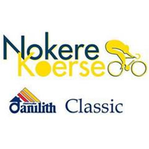

Verslag
149 Noeste Kerels Reden met een goede reden Nokere Koerse. Die goede reden was voor het dappere viertal Taminiaux, Harteels, Christian en Kelly in beeld komen. Ze kregen echter geen vrijgeleide van het peloton, want hun maximale voorsprong bedroeg nog geen 4 minuten. De goede reden voor Alpecin en Red Bull om het verschil niet te groot te laten worden, was dat ze allebei een topfavoriet in hun rangen hadden respectievelijk de Vlam van Ham Philipsen en de Hommel uit Lommel Meeus.
Hun reden is Nokere Koerse voor de eerste keer op hun palmares zetten, Jakobsen en Dupont waren de enige twee ex-winnaars aan de start. En die Dupont raakte tijdens de race dan ook nog eens betrokken bij een val, net zoals de andere onfortuinlijken Crabbe, Hofstetter, Ackermann… Pogingen om weg te rijden uit het peloton werken als een lap op een rode stier voor Gianni Vermeersch, die alles neutraliseert, zowel Albert Philipsen als Walscheid trekt hij Lidl bij beetje weer terug tot de orde.
Killy blijft het peloton het langst kietelen, maar ook hij is er uiteindelijk aan voor de moeite.En dan flitst Alec Segaert ervandoor op 14 km van de meet. De Stoomtrein Segaert dendert in tijdrijdersstijl richting finish. Zijn ploegmakkers stoppen voorbeeldig af. Op 1 km van de meet zien we met halfagbeten nagels hoe hij nog meer dan 20 seconden voorsprong vasthoudt. Zijn we hier getuige van een nummertje? Maar de laatste kilometer gaat omhoog en het melkzuur spat ervan af bij de aanvalslustige Lendeledenaar. De kracht in zijn lenden loopt ledig en bij de stralende lentezon moet hij met lede ogen toezien hoe het voltallige sprintersgild hem voorbijzoemt. Hij is net niet victorious. Het is Jasper de master die overtuigend wint voor Meeus en Molano
De winst in megabike gaat vandaag naar Senne Dessers (Les baroudeurs), hij wint op restbudget! van Sander De Smet. Jos Desair (De Ploeg van Jef Pedal) wordt 3de. Proficiat Senne met je nipte overwinning!
In de tussenstand hebben we een nieuwe nummer 1 of eigenlijk een oude nummer 1, namelijk Lene Jacobs komt terug op 1 te staan voor Daan Van Breedam (Bluvn Doan) die dus een plekje zakt. Hij laat nog net zijn moeder achter hem op plek 3, Liesbeth Christiaens met De Stoempers.
Uitslagen, Tussenstand & optimale ploeg kan je vinden onder het verslag op de website: https://jolly-bohr-326994.netlify.app/
Wil je nog meer statistieken dan kan je verder zoeken via het menu statistieken.
Sportieve groeten,
Stijn, Arnout & Fred